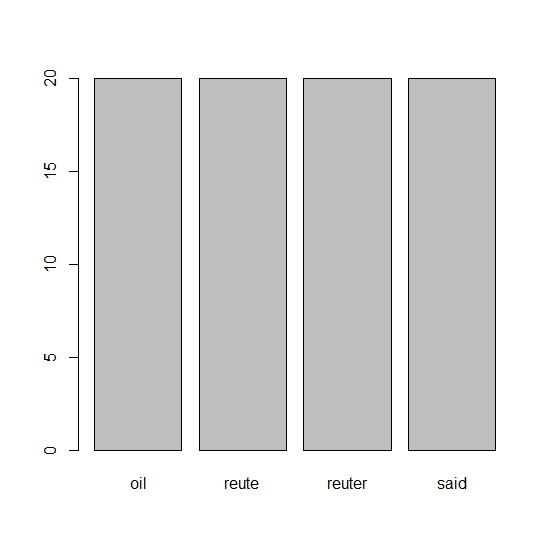

제10장 tm 패키지를 이용한 Corpus 실습
1. 텍스트 파일을 읽어서 Corpus (복수 개의 파일 묶음) 만들기
xxxxxxxxxx# 1) library(tm)txt <- system.file("texts", "txt", package="tm") # tm 패키지의 texts/txt 경로 : ./R/win-library/3.5/tm/texts/txt# 2)ovid <- Corpus(DirSource(txt), readerControl=list(language="lat")) # 5개의 text files (ovid_1.txt ~ ovid_5.txt)# 3)getReaders() # a character vector with readers provided by package tmxxxxxxxxxx##### [1] "readDataframe" "readDOC" ## [3] "readPDF" "readPlain" ## [5] "readRCV1" "readRCV1asPlain" ## [7] "readReut21578XML" "readReut21578XMLasPlain"## [9] "readTagged" "readXML"
xxxxxxxxxx# 4)로이터 통신 뉴스 데이터로 21578개의 문서# (토픽, 저자, 위치 등에 대한 메타데이터 존재)로 구성reut21578 <- system.file("texts","crude", package = "tm")# 5) (reuters <- Corpus(DirSource(reut21578), readerControl = list(reader = readReut21578XML)))(reuters <- Corpus(DirSource(reut21578), readerControl = list(reader = readReut21578XMLasPlain)))# inspect(reuters[1:3]) # 읽어들인 3개의 문서 검토결과 :
xxxxxxxxxx> reut21578 <- system.file("texts","crude", package = "tm")>> # 5)> (reuters <- Corpus(DirSource(reut21578),+ readerControl = list(reader = readReut21578XML)))## <<VCorpus>>## Metadata: corpus specific: 0, document level (indexed): 0## Content: documents: 20>> (reuters <- Corpus(DirSource(reut21578),+ readerControl = list(reader = readReut21578XMLasPlain)))## <<VCorpus>>## Metadata: corpus specific: 0, document level (indexed): 0## Content: documents: 20>> #> inspect(reuters[1:3]) # 읽어들인 3개의 문서 검토## <<VCorpus>>## Metadata: corpus specific: 0, document level (indexed): 0## Content: documents: 3#### [[1]]## <<PlainTextDocument>>## Metadata: 16## Content: chars: 527#### [[2]]## <<PlainTextDocument>>## Metadata: 16## Content: chars: 2634#### [[3]]## <<PlainTextDocument>>## Metadata: 16## Content: chars: 330
2. 벡터 소스(docs)로 부터 읽어 들이기 : 예..
xxxxxxxxxx# 6) docs <- c("This is a text","This another one.", "My name is Eric")Corpus(VectorSource(docs))# 7)docsCorpus <- Corpus(VectorSource(docs))writeCorpus(docsCorpus)# docsCorpus의 내용 보기inspect(docsCorpus[1:3])docsCorpus[[1]]$contentdocsCorpus[[2]]$contentdocsCorpus[[3]]$content결과 :
xxxxxxxxxx> docs <- c("This is a text","This another one.", "My name is Eric")> Corpus(VectorSource(docs))## <<SimpleCorpus>>## Metadata: corpus specific: 1, document level (indexed): 0## Content: documents: 3>> # 7)> docsCorpus <- Corpus(VectorSource(docs))> writeCorpus(docsCorpus)>> # docsCorpus의 내용 보기> inspect(docsCorpus[1:3])## <<SimpleCorpus>>## Metadata: corpus specific: 1, document level (indexed): 0## Content: documents: 3#### [1] This is a text This another one. My name is Eric>> docsCorpus[[1]]$content## [1] "This is a text"> docsCorpus[[2]]$content## [1] "This another one."> docsCorpus[[3]]$content## [1] "My name is Eric"
3. xml 문서를 tm_map() 이용해서 텍스로 전환하기
xxxxxxxxxx# 읽어들일 문서의 directory path 정보reut21578 <- system.file("texts","crude", package = "tm")# XML 리더(readReut21578XML)를 통해 문서 읽음(reuters <- Corpus(DirSource(reut21578), readerControl = list(reader = readReut21578XML)))# 8) XML문서를 text(PlainTextDocument)로 전환reuters <- tm_map(reuters, PlainTextDocument)# ** 숫자 제거 (removeNumbers)reuters <- tm_map(reuters, removeNumbers)# 9) 중간의 공백 (stripWhitespace) 제거 reuters <- tm_map(reuters, stripWhitespace)# 10) 글자들을 모두 소문자로 변경(content_transformer(tolower))하여 # 사전의 내용과 비교할 수 있도록 표준화reuters <- tm_map(reuters, content_transformer(tolower))# 11-1) 영어의 stopwords 제거 (띄어쓰기와 시제 등의 내용 제거)reuters <- tm_map(reuters, removeWords, stopwords("english"))# ** 구두점 제거 reuters = tm_map(reuters, removePunctuation, preserve_intra_word_dashes = TRUE)# 11-2) 형태소 분석 : 표준형으로 다 바꿔줌(과거형이나 복수형을 표준형으로 바꿔줌)library(SnowballC)tm_map(reuters, stemDocument)결과 :
xxxxxxxxxx> # XML 리더(readReut21578XML)를 통해 문서 읽음> (reuters <- Corpus(DirSource(reut21578), readerControl = list(reader = readReut21578XML)))<<VCorpus>>Metadata: corpus specific: 0, document level (indexed): 0Content: documents: 20xxxxxxxxxx> # 11-2) 형태소 분석 : 표준형으로 다 바꿔줌(과거형이나 복수형을 표준형으로 바꿔줌)> tm_map(reuters, stemDocument)<<VCorpus>>Metadata: corpus specific: 0, document level (indexed): 0Content: documents: 20>
4. 변형 및 결과 보기
xxxxxxxxxx# 12) 문서 번호와 단어 간의 사용여부 또는 빈도수를 이용하여 matrix를 만드는 작업dtm <- DocumentTermMatrix(reuters, control=list(weighting=weightTf))inspect(dtm[1:5,1:5])# 13) 10회 이상의 빈출어 찾아 내기findFreqTerms(dtm, 10)# 14) opec와 상관계수가 0.8 이상이 단어 찾기findAssocs(dtm, "opec", 0.6)# 15) 희소한 단어들 제거하기dtm2 <- removeSparseTerms(dtm, 0.2)dtm2 결과 :
xxxxxxxxxx> # 12) 문서 번호와 단어 간의 사용여부 또는 빈도수를 이용하여 matrix를 만드는 작업> dtm <- DocumentTermMatrix(reuters, control=list(weighting=weightTf))> inspect(dtm[1:5,1:5])## <<DocumentTermMatrix (documents: 5, terms: 5)>>## Non-/sparse entries: 1/24## Sparsity : 96%## Maximal term length: 10## Weighting : term frequency (tf)## Sample :## Error in `[.simple_triplet_matrix`(x, docs, terms) :## Repeated indices currently not allowed.>> # 13) 10회 이상의 빈출어 찾아 내기> findFreqTerms(dtm, 10)## [1] "barrel" "barrels" "bpd" "crude" "dlrs"## [6] "feb" "government" "group" "industry" "kuwait"## [11] "last" "mar" "march" "market" "meeting"## [16] "minister" "mln" "new" "official" "oil"## [21] "one" "opec" "output" "pct" "petroleum"## [26] "price" "prices" "production" "reute" "reuter"## [31] "said" "saudi" "sheikh" "will" "world">> # 14) opec와 상관계수가 0.8 이상이 단어 찾기> findAssocs(dtm, "opec", 0.6)## $opec## analysts buyers meeting oil## 0.86 0.84 0.84 0.84## named emergency said agreement## 0.83 0.81 0.78 0.77## clearly demand differentials late## 0.76 0.76 0.76 0.76## reports trying winter address## 0.76 0.76 0.76 0.75## addressed advantage although analysis## 0.75 0.75 0.75 0.75## analyst analystsby anything associates## 0.75 0.75 0.75 0.75## bcopec-maymee bijan brothers cambridge## 0.75 0.75 0.75 0.75## center cera characterized cheating## 0.75 0.75 0.75 0.75## closer condition control critical## 0.75 0.75 0.75 0.75## crudeusaopecy cutting dafflisio daniel## 0.75 0.75 0.75 0.75## david deemed dillard director## 0.75 0.75 0.75 0.75## earlier easy editor eight## 0.75 0.75 0.75 0.75## environment excess excesses expects## 0.75 0.75 0.75 0.75## faces firm harvard however## 0.75 0.75 0.75 0.75## immediately initiative issue june## 0.75 0.75 0.75 0.75## keep learn lesson ltd## 0.75 0.75 0.75 0.75## manager mideast mizrahi mlotok## 0.75 0.75 0.75 0.75## moussavar-rahmani movement need optimism## 0.75 0.75 0.75 0.75## optimistic organization paul pessimistic## 0.75 0.75 0.75 0.75## principal problem problems production## 0.75 0.75 0.75 0.75## prompted quarter quotas readdress## 0.75 0.75 0.75 0.75## regain regional reiterate reuters## 0.75 0.75 0.75 0.75## rising salomon scheduled seeing## 0.75 0.75 0.75 0.75## session slackens slide soon## 0.75 0.75 0.75 0.75## sort spoke spriggs supply## 0.75 0.75 0.75 0.75## teach ted telephone thought## 0.75 0.75 0.75 0.75## together told try uncertain## 0.75 0.75 0.75 0.75## universitys unlikely wants wishes## 0.75 0.75 0.75 0.75## yergin prices ability markets## 0.75 0.74 0.72 0.71## opecs set bpd never## 0.71 0.71 0.69 0.69## current meet must sell## 0.68 0.68 0.68 0.68## come fixed interview may## 0.67 0.67 0.67 0.67## next now december## 0.62 0.61 0.60##>> # 15) 희소한 단어들 제거하기> dtm2 <- removeSparseTerms(dtm, 0.2)> dtm2## <<DocumentTermMatrix (documents: 20, terms: 4)>>## Non-/sparse entries: 80/0## Sparsity : 0%## Maximal term length: 6## Weighting : term frequency (tf)
V. 워드 클라우드
xxxxxxxxxxlibrary(wordcloud)# 16) 단어의 빈도를 계산하고, 빈도의 내림차순으로 정렬freq <- colSums(as.matrix(dtm2))freq2 <- apply(as.matrix(dtm2), 2, function(x) sum(x>0))barplot(freq2)# 17) 텍스트 크기나 색깔 등 효과를 주고, 워드 클라우드 만들기wordcloud(names(freq2), freq2, colors=rainbow(20))결과 1 : barplot()

결과 2 : wordcloud()